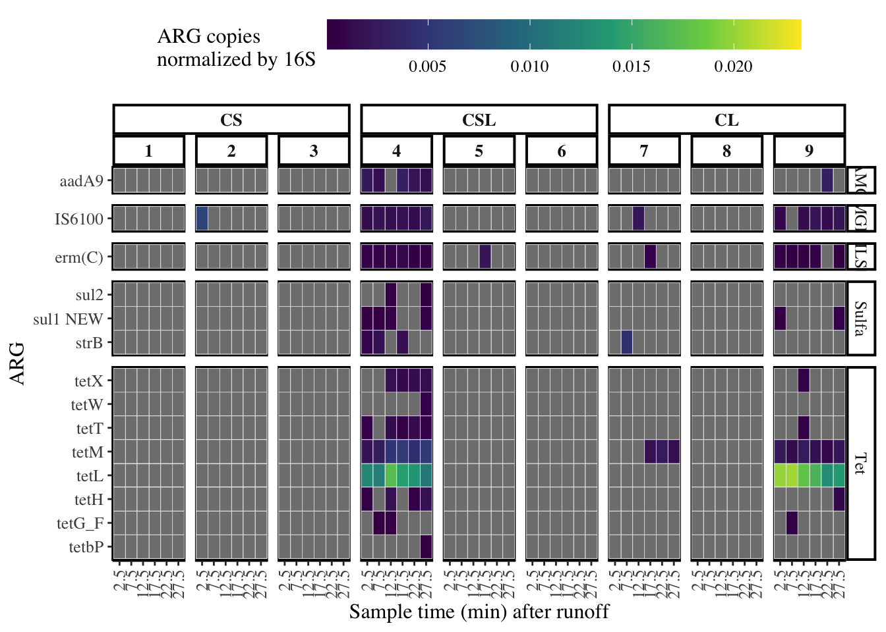

library(tidyverse)
library(viridisLite)
library(ggh4x)
library(ggpubr)
library(rstatix)
library(ggtext)ARGs
2/15/2021
ARG Figures
df <- readRDS("Data/metawithbiomark.RDS") standard <- df %>%
filter(sample_type %in% "standard")PC_Standards_no_NA <- readRDS("Data/ampliconlengths.RDS")
PC_Standards_no_NA# A tibble: 46 x 3
gene Assay amp_len
<chr> <chr> <chr>
1 aadA9_F aadA9 251
2 ant6-ia_F ant6-ia 313
3 ant6-ib_F ant6-ib 251
4 aph(3'')-ia_F aph(3'')-ia 301
5 erm(35)_F erm(35) 251
6 erm(B)_F erm(B) 251
7 erm(C)_F erm(C) 251
8 erm(F)_F erm(F) 251
9 erm(Q)_F erm(Q) 287
10 ermA/ermTR_F ermA/ermTR 251
# … with 36 more rowsCalculating limit of detection for each gene
filtered_standard <- standard %>%
filter(Sample_Name == Assay)
lod_max_by_gene <- filtered_standard %>%
group_by(rConc, Sample_Name) %>%
filter(any(Call == "Pass")) %>%
mutate(Value = as.numeric(Value)) %>%
filter(!Call == "Flag") %>%
summarise(max_lod = max(Value)) %>%
group_by(Sample_Name) %>%
slice_max(max_lod) `summarise()` has grouped output by 'rConc'. You can override using the `.groups` argument.lod_max_by_gene %>%
ggplot(aes(Sample_Name, max_lod)) +
geom_col(aes(fill = rConc)) +
theme_light() +
theme(
axis.text.x = element_text(angle = 90, hjust = 1)
) +
scale_y_continuous(expand = expansion(add = c(0, 0), mult = c(0, 0.1))) 
counts <- filtered_standard %>%
group_by(rConc, Sample_Name) %>%
filter(any(Call == "Pass")) %>%
select(Sample_Name, Assay, rConc, Value, Call) %>%
ungroup() %>%
filter(!Call == "Flag") %>%
left_join(PC_Standards_no_NA) %>%
select(Assay, rConc, Value, amp_len) %>%
mutate(counts = as.numeric(rConc) * (1/(10^9)) * (1/660) * ((6.023*10^23)/1) * (1/as.numeric(amp_len)) * (.0067)) %>%
mutate(Value = as.numeric(Value))Joining, by = "Assay"lod_max_by_gene# A tibble: 16 x 3
# Groups: Sample_Name [16]
rConc Sample_Name max_lod
<chr> <chr> <dbl>
1 1e-07 16S_Eub_338_518 24.7
2 1e-06 aadA9 23.4
3 1e-07 erm(C) 26.4
4 0.001 intI1F165_clinical 27.3
5 1e-05 IS6100 22.2
6 1e-06 strB 22.9
7 1e-06 sul1 NEW 22.7
8 1e-06 sul2 22.6
9 1e-07 tetbP 24.7
10 1e-06 tetG_F 23.5
11 1e-06 tetH 23.3
12 1e-05 tetL 19.5
13 1e-06 tetM 22.5
14 1e-06 tetT 21.9
15 1e-06 tetW 21.5
16 1e-06 tetX 22.6lm_eqn = function(df){
m = lm(data = df, formula = as.numeric(Value) ~ log10(counts + 1))
b = coef(m)[2]
data.frame(
eff = round(100*((10^(-1/b))-1), digits = 2),
r2 = format(summary(m)$r.squared, digits = 3),
LOD = round(max(df$Value), digits = 2),
Intercept = round(coef(m)[1], digits = 2),
Slope = round(coef(m)[2], digits = 2)
)
}
st_splits <- counts %>%
group_by(Assay) %>%
group_split()
eqs <- st_splits %>%
lapply(., lm_eqn) %>%
bind_rows()
labels <- lapply(st_splits, slice_head, n = 1) %>%
bind_rows() %>%
select(Assay) %>%
bind_cols(eqs) %>%
mutate(eq_label = paste0("LOD = ", LOD, "<br>r^2 = ", r2, "<br>Efficiency = ", eff, "<br>Slope = ", Slope, "<br>Intercept = ", Intercept))
SCPlots <- counts %>%
ggplot(aes(as.numeric(log10(counts + 1)), as.numeric(Value))) +
geom_point() +
facet_wrap( ~ Assay, scales = "free") +
theme(
panel.border = element_rect(color = "black", size = 1, fill = NA),
panel.grid.minor.x = element_blank(),
panel.grid.minor.y = element_blank(),
panel.spacing = unit(0.5, "lines"),
strip.background = element_rect(color = "black", size = 1, fill = NA),
) +
labs(
x = "Log10 (gene copies per reaction)",
y = "Ct"
) +
scale_x_continuous(limits = c(0, 7), breaks = seq(0, 7, 1), expand = c(0, 0)) +
scale_y_continuous(limits = c(0, 25)) +
geom_smooth(aes(group=1), method="lm", se=FALSE) +
ggtext::geom_richtext(data = labels, aes(x = 2, y = 5, label = eq_label),
size = 4, fontface = "bold", inherit.aes = FALSE) +
theme(
text = element_text(size = 12, family = "Times"),
panel.background = element_rect(color = 'black', size = 1.4),
strip.text.x = element_text(size = 10, face = 'bold'),
strip.background = element_rect(colour = 'black', size = 1.4),
axis.text.x = element_text(angle = 90, vjust = 0.5, hjust=1),
legend.position = "top",
legend.key.width = unit(.75, "in")
)
SCPlots`geom_smooth()` using formula 'y ~ x'Warning: Removed 7 rows containing non-finite values (stat_smooth).Warning: Removed 7 rows containing missing values (geom_point).Warning: Removed 6 rows containing missing values (geom_smooth).
# Save a table of the information from each curve
LODtable <- labels %>%
select(!eq_label)
LODtable# A tibble: 16 x 6
Assay eff r2 LOD Intercept Slope
<chr> <dbl> <chr> <dbl> <dbl> <dbl>
1 16S_Eub_338_518 95.1 0.952 24.7 28.3 -3.45
2 aadA9 81.7 0.932 23.4 29.4 -3.86
3 erm(C) 82.6 0.969 26.4 29.2 -3.82
4 intI1F165_clinical 49.4 0.855 27.3 47.0 -5.73
5 IS6100 89.7 0.947 22.2 26.1 -3.6
6 strB 81.5 0.981 22.9 29.5 -3.86
7 sul1 NEW 94.4 0.989 22.7 26.1 -3.46
8 sul2 106. 0.975 22.6 25.1 -3.19
9 tetbP 92.7 0.99 24.7 25.9 -3.51
10 tetG_F 87.7 0.985 23.5 26.2 -3.66
11 tetH 82.2 0.999 23.3 28.3 -3.84
12 tetL 85.9 0.999 19.5 28.3 -3.71
13 tetM 78.3 0.997 22.5 27.4 -3.98
14 tetT 86.3 0.998 21.9 26.4 -3.7
15 tetW 97.6 0.997 21.5 26.5 -3.38
16 tetX 77.6 0.998 22.6 27.8 -4.01write_csv(LODtable, file = "Data/standardcurves.csv")Calculating counts in an environmental sample
counts# A tibble: 425 x 5
Assay rConc Value amp_len counts
<chr> <chr> <dbl> <chr> <dbl>
1 tetbP 1e-07 24.7 251 2.44
2 sul1 NEW 1e-07 21.8 251 2.44
3 IS6100 1e-07 21.4 251 2.44
4 erm(C) 1e-07 26.4 251 2.44
5 16S_Eub_338_518 1e-07 24.7 257 2.38
6 tetbP 1e-06 22.1 251 24.4
7 tetbP 1e-06 20.7 251 24.4
8 tetbP 1e-06 20.5 251 24.4
9 sul1 NEW 1e-06 22.7 251 24.4
10 sul1 NEW 1e-06 20.8 251 24.4
# … with 415 more rowsEnvironment Ct values
water <- df %>%
filter(sample_type %in% "water", !Sample_Name == "Supply_Water")
water# A tibble: 6,336 x 21
Sample_Name Sample_Type Assay Assay_Type ID rConc Value `Calibrated rCo…
<chr> <chr> <chr> <chr> <chr> <chr> <chr> <chr>
1 P2_5 Unknown 16S_E… Test S06-A… 1 18.3… 4.9938279547795…
2 P2_5 Unknown 16S_E… Test S06-A… 1 18.3… 5.0738800340691…
3 P2_5 Unknown 16S_E… Test S06-A… 1 17.7… 7.6293726452979…
4 P2_5 Unknown sul1 … Test S06-A… 1 999 -1
5 P2_5 Unknown sul1 … Test S06-A… 1 999 -1
6 P2_5 Unknown sul1 … Test S06-A… 1 999 -1
7 P2_5 Unknown erm(3… Test S06-A… 1 999 -1
8 P2_5 Unknown erm(3… Test S06-A… 1 999 -1
9 P2_5 Unknown erm(3… Test S06-A… 1 999 -1
10 P2_5 Unknown tetW Test S06-A… 1 999 -1
# … with 6,326 more rows, and 13 more variables: Quality <chr>, Call <chr>,
# Threshold <chr>, In Range <chr>, Out Range <chr>, Peak Ratio <chr>,
# soil_type <chr>, plot <chr>, treatment <chr>, block <chr>,
# sample_day <fct>, sample_number <chr>, sample_type <chr>soil <- df %>%
filter(sample_type %in% "soil")
soil# A tibble: 10,944 x 21
Sample_Name Sample_Type Assay Assay_Type ID rConc Value `Calibrated rCo…
<chr> <chr> <chr> <chr> <chr> <chr> <chr> <chr>
1 C_1_TB_1 Unknown 16S_E… Test S95-A… 1 15.1… 0.0001944385882…
2 C_1_TB_1 Unknown 16S_E… Test S95-A… 1 14.8… 0.0002366823806…
3 C_1_TB_1 Unknown 16S_E… Test S95-A… 1 14.9… 0.0002276031810…
4 C_1_TB_1 Unknown sul1 … Test S95-A… 1 999 -1
5 C_1_TB_1 Unknown sul1 … Test S95-A… 1 999 -1
6 C_1_TB_1 Unknown sul1 … Test S95-A… 1 999 -1
7 C_1_TB_1 Unknown erm(3… Test S95-A… 1 999 -1
8 C_1_TB_1 Unknown erm(3… Test S95-A… 1 999 -1
9 C_1_TB_1 Unknown erm(3… Test S95-A… 1 999 -1
10 C_1_TB_1 Unknown tetW Test S95-A… 1 999 -1
# … with 10,934 more rows, and 13 more variables: Quality <chr>, Call <chr>,
# Threshold <chr>, In Range <chr>, Out Range <chr>, Peak Ratio <chr>,
# soil_type <chr>, plot <chr>, treatment <chr>, block <chr>,
# sample_day <fct>, sample_number <chr>, sample_type <chr>unique(water$Sample_Name) [1] "P2_5" "P2_3" "P2_1" "P1_5" "P1_3" "P1_1" "P2_6" "P2_4" "P2_2" "P1_6"
[11] "P1_4" "P1_2" "P3_5" "P3_3" "P3_1" "P3_6" "P3_4" "P3_2" "P9_6" "P4_5"
[21] "P9_4" "P4_3" "P9_2" "P4_1" "P9_5" "P4_6" "P9_3" "P4_4" "P9_1" "P4_2"
[31] "P8_6" "P5_5" "P8_4" "P5_3" "P8_2" "P5_1" "P8_5" "P5_6" "P8_3" "P5_4"
[41] "P8_1" "P5_2" "P7_6" "P6_5" "P7_4" "P6_3" "P7_2" "P6_1" "P7_5" "P6_6"
[51] "P7_3" "P6_4" "P7_1" "P6_2"get_counts <- function(stddf, ctdf, gene){
#stddf <- counts # use to test
#ctdf <- water # use to test
#gene <- "tetM" # use to test
std <- stddf %>%
filter(Assay == gene)
ctd <- ctdf %>%
filter(Assay == gene)
inverse.lm <- lm(data = std, formula = log10(counts+1) ~ as.numeric(Value)) # Note log10 transformation
val2 <- ctd$Value
ctd$counts <- 10 ^ predict(inverse.lm ,data.frame(Value = val2), interval = "predict")[,1]
return(ctd)
}unique(counts$Assay) [1] "tetbP" "sul1 NEW" "IS6100"
[4] "erm(C)" "16S_Eub_338_518" "strB"
[7] "intI1F165_clinical" "aadA9" "tetG_F"
[10] "sul2" "tetW" "tetT"
[13] "tetL" "tetM" "tetH"
[16] "tetX" unique(water$Assay) [1] "16S_Eub_338_518" "sul1 NEW" "erm(36)"
[4] "tetW" "aac3-Via" "sul2"
[7] "erm(C)" "tetX" "aadA17"
[10] "tetbP" "int1-a-marko" "tnpA1"
[13] "aadA9" "tetG_F" "intI1F165_clinical"
[16] "tnpA2" "tetH" "aadD"
[19] "tnpA3" "lnuA" "tetL"
[22] "aphA3" "tnpA5" "IS1247"
[25] "tetM" "cadC" "tnpA6"
[28] "IS6100" "tetT" "cmr"
[31] "tnpA7" "strB" By changing high Ct values to NA, we clean up the heatmap by converting these “non detects” to gray color tiles
# Change high Ct values to NA
water$Value[water$Value > 30] <- NA
soil$Value[soil$Value > 30] <- NAc("tetbP", "sul1 NEW", "IS6100", "erm(C)", "16S_Eub_338_518",
"strB", "intI1F165_clinical", "aadA9", "tetG_F", "sul2", "tetW",
"tetT", "tetL", "tetM", "tetH", "tetX")Joining, by = c("Sample_Name", "Sample_Type", "Assay", "Assay_Type", "ID", "rConc", "Value", "Calibrated rConc", "Quality", "Call", "Threshold", "In Range", "Out Range", "Peak Ratio", "soil_type", "plot", "treatment", "block", "sample_day", "sample_number", "sample_type", "counts")
Joining, by = c("Sample_Name", "Sample_Type", "Assay", "Assay_Type", "ID", "rConc", "Value", "Calibrated rConc", "Quality", "Call", "Threshold", "In Range", "Out Range", "Peak Ratio", "soil_type", "plot", "treatment", "block", "sample_day", "sample_number", "sample_type", "counts")
Joining, by = c("Sample_Name", "Sample_Type", "Assay", "Assay_Type", "ID", "rConc", "Value", "Calibrated rConc", "Quality", "Call", "Threshold", "In Range", "Out Range", "Peak Ratio", "soil_type", "plot", "treatment", "block", "sample_day", "sample_number", "sample_type", "counts")
Joining, by = c("Sample_Name", "Sample_Type", "Assay", "Assay_Type", "ID", "rConc", "Value", "Calibrated rConc", "Quality", "Call", "Threshold", "In Range", "Out Range", "Peak Ratio", "soil_type", "plot", "treatment", "block", "sample_day", "sample_number", "sample_type", "counts")
Joining, by = c("Sample_Name", "Sample_Type", "Assay", "Assay_Type", "ID", "rConc", "Value", "Calibrated rConc", "Quality", "Call", "Threshold", "In Range", "Out Range", "Peak Ratio", "soil_type", "plot", "treatment", "block", "sample_day", "sample_number", "sample_type", "counts")
Joining, by = c("Sample_Name", "Sample_Type", "Assay", "Assay_Type", "ID", "rConc", "Value", "Calibrated rConc", "Quality", "Call", "Threshold", "In Range", "Out Range", "Peak Ratio", "soil_type", "plot", "treatment", "block", "sample_day", "sample_number", "sample_type", "counts")
Joining, by = c("Sample_Name", "Sample_Type", "Assay", "Assay_Type", "ID", "rConc", "Value", "Calibrated rConc", "Quality", "Call", "Threshold", "In Range", "Out Range", "Peak Ratio", "soil_type", "plot", "treatment", "block", "sample_day", "sample_number", "sample_type", "counts")
Joining, by = c("Sample_Name", "Sample_Type", "Assay", "Assay_Type", "ID", "rConc", "Value", "Calibrated rConc", "Quality", "Call", "Threshold", "In Range", "Out Range", "Peak Ratio", "soil_type", "plot", "treatment", "block", "sample_day", "sample_number", "sample_type", "counts")
Joining, by = c("Sample_Name", "Sample_Type", "Assay", "Assay_Type", "ID", "rConc", "Value", "Calibrated rConc", "Quality", "Call", "Threshold", "In Range", "Out Range", "Peak Ratio", "soil_type", "plot", "treatment", "block", "sample_day", "sample_number", "sample_type", "counts")
Joining, by = c("Sample_Name", "Sample_Type", "Assay", "Assay_Type", "ID", "rConc", "Value", "Calibrated rConc", "Quality", "Call", "Threshold", "In Range", "Out Range", "Peak Ratio", "soil_type", "plot", "treatment", "block", "sample_day", "sample_number", "sample_type", "counts")
Joining, by = c("Sample_Name", "Sample_Type", "Assay", "Assay_Type", "ID", "rConc", "Value", "Calibrated rConc", "Quality", "Call", "Threshold", "In Range", "Out Range", "Peak Ratio", "soil_type", "plot", "treatment", "block", "sample_day", "sample_number", "sample_type", "counts")
Joining, by = c("Sample_Name", "Sample_Type", "Assay", "Assay_Type", "ID", "rConc", "Value", "Calibrated rConc", "Quality", "Call", "Threshold", "In Range", "Out Range", "Peak Ratio", "soil_type", "plot", "treatment", "block", "sample_day", "sample_number", "sample_type", "counts")
Joining, by = c("Sample_Name", "Sample_Type", "Assay", "Assay_Type", "ID", "rConc", "Value", "Calibrated rConc", "Quality", "Call", "Threshold", "In Range", "Out Range", "Peak Ratio", "soil_type", "plot", "treatment", "block", "sample_day", "sample_number", "sample_type", "counts")
Joining, by = c("Sample_Name", "Sample_Type", "Assay", "Assay_Type", "ID", "rConc", "Value", "Calibrated rConc", "Quality", "Call", "Threshold", "In Range", "Out Range", "Peak Ratio", "soil_type", "plot", "treatment", "block", "sample_day", "sample_number", "sample_type", "counts")
Joining, by = c("Sample_Name", "Sample_Type", "Assay", "Assay_Type", "ID", "rConc", "Value", "Calibrated rConc", "Quality", "Call", "Threshold", "In Range", "Out Range", "Peak Ratio", "soil_type", "plot", "treatment", "block", "sample_day", "sample_number", "sample_type", "counts")
Joining, by = c("Sample_Name", "Sample_Type", "Assay", "Assay_Type", "ID", "rConc", "Value", "Calibrated rConc", "Quality", "Call", "Threshold", "In Range", "Out Range", "Peak Ratio", "soil_type", "plot", "treatment", "block", "sample_day", "sample_number", "sample_type", "counts")
Joining, by = c("Sample_Name", "Sample_Type", "Assay", "Assay_Type", "ID", "rConc", "Value", "Calibrated rConc", "Quality", "Call", "Threshold", "In Range", "Out Range", "Peak Ratio", "soil_type", "plot", "treatment", "block", "sample_day", "sample_number", "sample_type", "counts")
Joining, by = c("Sample_Name", "Sample_Type", "Assay", "Assay_Type", "ID", "rConc", "Value", "Calibrated rConc", "Quality", "Call", "Threshold", "In Range", "Out Range", "Peak Ratio", "soil_type", "plot", "treatment", "block", "sample_day", "sample_number", "sample_type", "counts")
Joining, by = c("Sample_Name", "Sample_Type", "Assay", "Assay_Type", "ID", "rConc", "Value", "Calibrated rConc", "Quality", "Call", "Threshold", "In Range", "Out Range", "Peak Ratio", "soil_type", "plot", "treatment", "block", "sample_day", "sample_number", "sample_type", "counts")
Joining, by = c("Sample_Name", "Sample_Type", "Assay", "Assay_Type", "ID", "rConc", "Value", "Calibrated rConc", "Quality", "Call", "Threshold", "In Range", "Out Range", "Peak Ratio", "soil_type", "plot", "treatment", "block", "sample_day", "sample_number", "sample_type", "counts")
Joining, by = c("Sample_Name", "Sample_Type", "Assay", "Assay_Type", "ID", "rConc", "Value", "Calibrated rConc", "Quality", "Call", "Threshold", "In Range", "Out Range", "Peak Ratio", "soil_type", "plot", "treatment", "block", "sample_day", "sample_number", "sample_type", "counts")
Joining, by = c("Sample_Name", "Sample_Type", "Assay", "Assay_Type", "ID", "rConc", "Value", "Calibrated rConc", "Quality", "Call", "Threshold", "In Range", "Out Range", "Peak Ratio", "soil_type", "plot", "treatment", "block", "sample_day", "sample_number", "sample_type", "counts")
Joining, by = c("Sample_Name", "Sample_Type", "Assay", "Assay_Type", "ID", "rConc", "Value", "Calibrated rConc", "Quality", "Call", "Threshold", "In Range", "Out Range", "Peak Ratio", "soil_type", "plot", "treatment", "block", "sample_day", "sample_number", "sample_type", "counts")
Joining, by = c("Sample_Name", "Sample_Type", "Assay", "Assay_Type", "ID", "rConc", "Value", "Calibrated rConc", "Quality", "Call", "Threshold", "In Range", "Out Range", "Peak Ratio", "soil_type", "plot", "treatment", "block", "sample_day", "sample_number", "sample_type", "counts")
Joining, by = c("Sample_Name", "Sample_Type", "Assay", "Assay_Type", "ID", "rConc", "Value", "Calibrated rConc", "Quality", "Call", "Threshold", "In Range", "Out Range", "Peak Ratio", "soil_type", "plot", "treatment", "block", "sample_day", "sample_number", "sample_type", "counts")
Joining, by = c("Sample_Name", "Sample_Type", "Assay", "Assay_Type", "ID", "rConc", "Value", "Calibrated rConc", "Quality", "Call", "Threshold", "In Range", "Out Range", "Peak Ratio", "soil_type", "plot", "treatment", "block", "sample_day", "sample_number", "sample_type", "counts")
Joining, by = c("Sample_Name", "Sample_Type", "Assay", "Assay_Type", "ID", "rConc", "Value", "Calibrated rConc", "Quality", "Call", "Threshold", "In Range", "Out Range", "Peak Ratio", "soil_type", "plot", "treatment", "block", "sample_day", "sample_number", "sample_type", "counts")
Joining, by = c("Sample_Name", "Sample_Type", "Assay", "Assay_Type", "ID", "rConc", "Value", "Calibrated rConc", "Quality", "Call", "Threshold", "In Range", "Out Range", "Peak Ratio", "soil_type", "plot", "treatment", "block", "sample_day", "sample_number", "sample_type", "counts")WaterCounts <- WaterCounts %>% # Add classes to ARGs
mutate(gene_class = case_when(Assay %in% unique(WaterCounts$Assay[grepl("^[aa]", WaterCounts$Assay)]) ~ "AMG",
Assay %in% unique(WaterCounts$Assay[grepl("^[erm]", WaterCounts$Assay)]) ~ "MLSB",
Assay %in% unique(WaterCounts$Assay[grepl("^[sul]", WaterCounts$Assay)]) ~ "Sulfa",
Assay %in% unique(WaterCounts$Assay[grepl("tet", WaterCounts$Assay)]) ~ "Tet",
Assay %in% c("intl1", "intl2", "intl3", "IS1247", "IS6100", "tnpA2",
"tnpA5", "tnpA6", "tnpA3", "intI1F165_clinical", "tnpA1", "int1-a-marko", "tnpA7") ~ "MGE",
Assay %in% c("cadC", "cmr") ~ "HM",
Assay == c("16S_Eub_338_518") ~ "16S"))
WaterCounts$gene_class_f = factor(WaterCounts$gene_class, # Order the classes
levels = c('AMG', 'MLSB', 'Sulfa', "Tet", "MGE", "HM", "16S"))SoilCounts <- SoilCounts %>% # Add classes to ARGs
mutate(gene_class = case_when(Assay %in% unique(SoilCounts$Assay[grepl("^[aa]", SoilCounts$Assay)]) ~ "AMG",
Assay %in% unique(SoilCounts$Assay[grepl("^[erm]", SoilCounts$Assay)]) ~ "MLSB",
Assay %in% unique(SoilCounts$Assay[grepl("^[sul]", SoilCounts$Assay)]) ~ "Sulfa",
Assay %in% unique(SoilCounts$Assay[grepl("tet", SoilCounts$Assay)]) ~ "Tet",
Assay %in% c("intl1", "intl2", "intl3", "IS1247", "IS6100", "tnpA2",
"tnpA5", "tnpA6", "tnpA3", "intI1F165_clinical", "tnpA1", "int1-a-marko", "tnpA7") ~ "MGE",
Assay %in% c("cadC", "cmr") ~ "HM",
Assay == c("16S_Eub_338_518") ~ "16S"))
SoilCounts$gene_class_f = factor(SoilCounts$gene_class, # Order the classes
levels = c('AMG', 'MLSB', 'Sulfa', "Tet", "MGE", "HM", "16S"))norm <- WaterCounts %>%
unite(ID, c("plot", "sample_number", "Assay"), sep = ".", remove = F) %>%
dplyr::group_by(plot, sample_number, Assay) %>%
dplyr::mutate(rep = seq_along(ID)) %>%
select(plot, sample_number, rep, treatment, Assay, gene_class, counts, Value) %>%
ungroup()soilnorm <- SoilCounts %>%
unite(ID, c("plot", "sample_day", "sample_number", "soil_type", "Assay"), sep = ".", remove = F) %>%
dplyr::group_by(plot, sample_day, sample_number, soil_type, Assay) %>%
dplyr::mutate(rep = seq_along(ID)) %>%
select(plot, sample_number, sample_day, soil_type, rep, treatment, Assay, gene_class, counts, Value) %>%
ungroup()SixS <- norm %>%
filter(Assay == "16S_Eub_338_518") %>%
dplyr::rename(SixSCount = counts) %>%
select(plot, sample_number, rep, SixSCount, treatment)
SoilSixS <- soilnorm %>%
filter(Assay == "16S_Eub_338_518") %>%
dplyr::rename(SixSCount = counts) %>%
select(plot, sample_number, sample_day, soil_type, rep, SixSCount, treatment)
dfdf <- norm %>%
left_join(SixS, by = c("plot", "sample_number", "rep", "treatment")) %>%
filter(!Assay == "16S_Eub_338_518")
soildfdf <- soilnorm %>%
left_join(SoilSixS, by = c("plot", "sample_number", "sample_day", "soil_type", "rep", "treatment")) %>%
filter(!Assay == "16S_Eub_338_518")
# Now got to divide each count of each gene by the 16s number
test <- WaterCounts %>% # Order ARGs based on class
arrange(gene_class)
levels <- dput(levels(factor(test$Assay))) # dput ftw!!!c("16S_Eub_338_518", "aadA9", "erm(C)", "IS6100", "strB", "sul1 NEW",
"sul2", "tetbP", "tetG_F", "tetH", "tetL", "tetM", "tetT", "tetW",
"tetX")dfdf$treatment = factor(dfdf$treatment,
levels = c('WCS', 'WCSM', 'WCM'))
# Also need to set the order of the soil data
soildfdf$treatment = factor(soildfdf$treatment,
levels = c('WCS', 'WCSM', 'WCM'))
dfdf$sample_number <- as.factor(dfdf$sample_number)
levels(dfdf$sample_number) <- list("2.5" = "1", "7.5" = "2", "12.5" = "3", "17.5" = "4", "22.5" = "5", "27.5" = "6")waterdata <- dfdf %>%
mutate(norm = counts/SixSCount)
soildata <- soildfdf %>%
mutate(norm = counts/SixSCount)Unfiltered counts in water
levels(waterdata$treatment) <- list("CS" = "WCS", "CSL" = "WCSM", "CL" = "WCM")
heatmap2 <- ggplot(waterdata, aes(as.factor(sample_number), ordered(Assay, levels = levels))) +
geom_tile(aes(fill = norm), colour = "white", size = 0.1) +
scale_fill_viridis_c(name = "ARG copies \nnormalized by 16S") +
labs(x = "Sample time (min) after runoff", y = "ARG") +
facet_nested(gene_class ~ treatment + plot, scales = "free", space = "free") + theme_classic() +
theme(
text = element_text(size = 12, family = "Times"),
panel.background = element_rect(color = 'black', size = 1.4),
strip.text.x = element_text(size = 10, face = 'bold'),
strip.background = element_rect(colour = 'black', size = 1.4),
axis.text.x = element_text(angle = 90, vjust = 0.5, hjust=1),
legend.position = "top",
legend.key.width = unit(.75, "in")
)
heatmap2ggplot(waterdata, aes(as.factor(sample_number), ordered(Assay, levels = levels))) +
geom_tile(aes(fill = counts), colour = "white", size = 0.1) +
scale_fill_viridis_c(name = "ARG copies") +
labs(x = "Sample time (min) after runoff", y = "ARG") +
facet_nested(gene_class ~ treatment + plot, scales = "free", space = "free") + theme_classic() +
theme(
text = element_text(size = 12, family = "Times"),
panel.background = element_rect(color = 'black', size = 1.4),
strip.text.x = element_text(size = 10, face = 'bold'),
strip.background = element_rect(colour = 'black', size = 1.4),
axis.text.x = element_text(angle = 90, vjust = 0.5, hjust=1),
legend.position = "top",
legend.key.width = unit(.75, "in")
) Filtered counts in water
waterwithlod <- waterdata %>%
left_join(lod_max_by_gene, by = c("Assay" = "Sample_Name"))
waterwithlod$norm[waterwithlod$Value >= waterwithlod$max_lod] <- NA
waterwithlod$counts[waterwithlod$Value >= waterwithlod$max_lod] <- NA
levels(waterwithlod$treatment) <- list("CS" = "WCS", "CSL" = "WCSM", "CL" = "WCM")Figure 4
#waterwithlod <- waterwithlod %>% mutate(Assay = str_replace(Assay, "tetG_F", "tetG"))
#waterwithlod %>%
# mutate(Assay = str_replace(Assay, "tetG_F", "tetG")) %>%
# count(Assay)
heatmap <- ggplot(waterwithlod, aes(as.factor(sample_number), ordered(Assay, levels = levels))) +
geom_tile(aes(fill = norm), colour = "white", size = 0.1) +
scale_fill_viridis_c(name = "ARG copies \nnormalized by 16S") +
labs(x = "Sample time (min) after runoff", y = "ARG") +
facet_nested(gene_class ~ treatment + plot, scales = "free", space = "free") + theme_classic() +
theme(
text = element_text(size = 12, family = "Times"),
panel.background = element_rect(color = 'black', size = 1.4),
strip.text.x = element_text(size = 10, face = 'bold'),
strip.background = element_rect(colour = 'black', size = 1.4),
axis.text.x = element_text(angle = 90, vjust = 0.5, hjust=1),
legend.position = "top",
legend.key.width = unit(.75, "in"))
heatmap
heatmap$data %>%
count(Assay)# A tibble: 14 x 2
Assay n
<chr> <int>
1 aadA9 198
2 erm(C) 198
3 IS6100 198
4 strB 198
5 sul1 NEW 198
6 sul2 198
7 tetbP 198
8 tetG_F 198
9 tetH 198
10 tetL 198
11 tetM 198
12 tetT 198
13 tetW 198
14 tetX 198- Astrik on manure ARGs ::: {.cell hash=“ARGs_cache/html/unnamed-chunk-48_5451d193ca86cbfaad6b1b67925f23e3”}
labels <- c(tetbP = "* tetbP ",
aphA3 = "* aphA3 ",
tetT = "* tetT ",
tetW = "* tetW ",
`erm(C)` = "* erm(C)",
tetX = "* tetX ",
tnpA1 = "* tnpA1 ",
tetH = "* tetH ",
lnuA = "* lnuA ",
tnpA5 = "* tnpA5 ",
tetM = "* tetM ",
cmr = "* cmr ",
tetG_F = "tetG ",
`sul1 NEW` = "sul1")
labels tetbP aphA3 tetT tetW erm(C) tetX tnpA1
"* tetbP " "* aphA3 " "* tetT " "* tetW " "* erm(C)" "* tetX " "* tnpA1 "
tetH lnuA tnpA5 tetM cmr tetG_F sul1 NEW
"* tetH " "* lnuA " "* tnpA5 " "* tetM " "* cmr " "tetG " "sul1" ::: ::: {.cell hash=“ARGs_cache/html/unnamed-chunk-50_b4fe11b0b749b059204434f321702c78”}
heatmap +
scale_y_discrete(
name = NULL,
labels = labels
) ggsave(filename = "Figures/Fig4.jpeg", plot = last_plot(), device = "jpeg", units = "in", width = 7, height = 7.5, dpi = 350):::
ggplot(waterwithlod, aes(as.factor(sample_number), ordered(Assay, levels = levels))) +
geom_tile(aes(fill = counts), colour = "white", size = 0.1) +
scale_fill_viridis_c(name = "ARG copies") +
labs(x = "Sample time (min) after runoff", y = "ARG") +
facet_nested(gene_class ~ treatment + plot, scales = "free", space = "free") + theme_classic() +
theme(
text = element_text(size = 12, family = "Times"),
panel.background = element_rect(color = 'black', size = 1.4),
strip.text.x = element_text(size = 10, face = 'bold'),
strip.background = element_rect(colour = 'black', size = 1.4),
axis.text.x = element_text(angle = 90, vjust = 0.5, hjust=1),
legend.position = "top",
legend.key.width = unit(.75, "in"))
A few genes were detected in low enough quantities that they are no longer visible in the filtered data set. Overall, the results do not change much, but there are changes in pairwise significance for some genes that I need to evaluate further.
Supp Figure S3
soilwithlod <- soildata %>%
left_join(lod_max_by_gene, by = c("Assay" = "Sample_Name"))
soilwithlod$norm[soilwithlod$Value >= soilwithlod$max_lod] <- NA
soilwithlod$counts[soilwithlod$Value >= soilwithlod$max_lod] <- NA
levels(soilwithlod$treatment) <- list("CS" = "WCS", "CSL" = "WCSM", "CL" = "WCM")
heatmap2 <- ggplot(soilwithlod, aes(as.factor(sample_day), ordered(Assay, levels = levels))) +
geom_tile(aes(fill = norm), colour = "white", size = 0.1) +
scale_fill_viridis_c(name = "ARG copies \nnormalized by 16S") +
labs(x = "Sample day", y = "ARG") +
facet_nested(gene_class ~ treatment + plot, scales = "free", space = "free") + theme_classic() +
theme(
text = element_text(size = 12, family = "Times"),
panel.background = element_rect(color = 'black', size = 1.4),
strip.text.x = element_text(size = 10, face = 'bold'),
strip.background = element_rect(colour = 'black', size = 1.4),
axis.text.x = element_text(angle = 90, vjust = 0.5, hjust=1),
legend.position = "top",
legend.key.width = unit(.75, "in")
)
heatmap2 +
scale_y_discrete(
name = NULL,
labels = labels
) 
ggsave(filename = "Figures/SupFigS3.jpeg", plot = last_plot(), device = "jpeg", units = "in", width = 7, height = 7.5, dpi = 350)